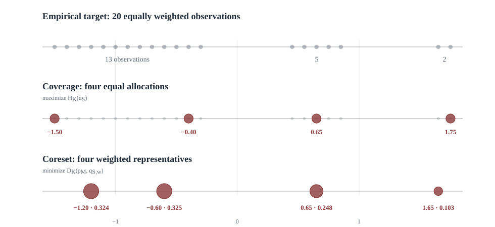

Coverage
Let $\mathcal X_M=\{x_1,\ldots,x_M\}$ be the candidate points. Sampling $N$ points without repeats gives a set $S\subseteq\mathcal X_M$ with $|S|=N$ and the uniform distribution
A direct entropy objective would maximize Shannon entropy over these distributions:
But every possible set has $N$ atoms with weight $1/N$, so
Unfortunately, Shannon entropy only sees the weights and the number of atoms. The entropy cannot distinguish a diverse selection from a cluster of near-duplicates. Clearly, there is some aspect of "information" that Shannon entropy has trouble identifying.
Similarity-sensitive coverage
I previously described similarity-sensitive entropy and derived its associated tangent scoring rule. For a similarity kernel $K$, the entropy is
To make this concrete and for the later numerical examples, the outcome space is the real line and similarity is the Laplace kernel which is known to lead to a concave entropy:
The scale $\ell$ states which numerical differences are small enough to count as similar. Replacing $H$ with $H_K$ gives
The budget $N$ is fixed and the weights remain uniform. Intuitively, we want to pick the set with the most "information", and it is self-evidently better to select points that are mutually dissimilar than to select near-duplicates. Is this achieved?
Redundancy
As may be expected, this objective has a simple interpretation. For each selected point, define its soft neighborhood count
Since $(Ku_S)(x_i)=d_i(S)/N$ (the typicality of $x_i$),
For a fixed $N$, maximizing $H_K$ is equivalent to minimizing the average log neighborhood count. Exponentiating gives
This lies between $1$ and $N$ (since $K(x,x)=1$ and $0\le K(x,y)\le1$) and can be read as an effective number of nonredundant selected points. It equals $N$ when the points are mutually dissimilar (neighborhood counts are all 1) and falls to $1$ when all selected points are equivalent under $K$.
The kernel entropy objective therefore selects a set of points that are as mutually dissimilar as possible. The scale $\ell$ tells which differences are small enough to count as similar. The effective count depends only on the probability weights and pairwise kernel values, so it requires no coordinates and works for any objects for which a similarity kernel is available. It is unchanged under a reparameterization when the kernel is transported with the objects.
Compression
Coverage asks how much distinctiveness a selected distribution contains. I use compression to refer to how well a sparse distribution can stand in for a specified target distribution, so the population frequencies now matter. The empirical distribution is
In this setting, a size-$N$ coreset is a distribution supported on observed points,
Both weights and sample locations are optimization variables, and $q_{S,w}$ is the probability model we try to approximate the empirical distribution $p_M$ with.
Ordinary cross-entropy
The averaged tangent score induced by Shannon entropy is ordinary cross-entropy, $C(p,q)$. Its regret is the Kullback–Leibler divergence $D(p,q)$:
Interpreted directly as a distribution, a coreset assigns zero mass to observations outside its support. When the $M$ observed atoms are distinct, $p_M$ assigns positive mass to every one of them, so $C(p_M,q_{S,w})$ and $D(p_M,q_{S,w})$ are infinite whenever $N<M$. Ordinary cross-entropy therefore supplies no ranking over these sparse models. Coreset weights are consequently not fit by treating the coreset as a probabilistic report for $p_M$, which seems unsatisfying. Conventionally, it is typical to re-express the coreset objective using some downstream loss that relates to the task at hand, or to abandon the discrete coreset model itself.
Smoothing
The obvious way to obtain finite ordinary cross-entropy is indeed to replace each retained atom with a continuous density. With Gaussian components, the reported distribution becomes
where $\phi_h$ is a Gaussian density with width $h$. Smoothing of course changes the object being reported, adding choices over density forms, locations, and bandwidths. This may be acceptable when the Gaussian component represents measurement error or genuine variation around a sample, but this seems to me to be convolving utility choices with our model form.
Furthermore, for a fixed positive bandwidth $h$, the Gaussian mixture is positive everywhere and its ordinary cross-entropy is meaningful. If $h$ is fitted and allowed to approach zero however, the in-sample likelihood can favor increasingly narrow spikes, since
The model can therefore be made to fit the empirical distribution arbitrarily well, necessitating a further layer of regularization.
Separating the model and the task
This all suggests to me that we need a more principled approach. Instead, the framework I'm developing tries to explicitly separate the probabilistic model from the task by allowing the objective to account for the task and the probabilistic model separately. We can define the task and model once, transport them back or forward to any representation, and then use the same objective to select a coreset or evaluate its performance.
That is, with similarity-sensitive scoring, $q$ remains an atomic distribution over the retained observations. The kernel now appears in the evaluation rule and states how much credit probability on $z_j$ receives when $x$ occurs. The model and scoring rule have separate jobs: $q$ states where the probability mass is, while $K$ states how that mass should be valued for the task. The same construction applies to text, graphs, molecules, or any other objects for which an appropriate pairwise similarity is available.
The two kernel-related constructions are still closely related. With gaussian similarity, the normalized overlap of two Gaussian bumps is an RBF kernel:
Gaussian bumps can therefore provide a similarity for the score without requiring the coreset itself to be interpreted as a Gaussian mixture. The differential entropy of the mixture and $H_K(q)$ remain different objectives.
Kernel scoring
Let $p$ denote the target distribution and $q$ the reported distribution. For either distribution $r\in\{p,q\}$, define its typicality by
where $K$ is the similarity kernel. The tangent score induced by $H_K$ defines cross-entropy and regret/divergence by
Coverage uses the entropy side of this construction, with no external target. Compression instead takes $p=p_M$ as the target and $q=q_{S,w}$ as the report. Its typicality is $\tau_q(x)=\sum_j w_jK(x,z_j)$, so probability assigned to several similar prototypes can jointly cover an observation.
For a symmetric kernel, the cross-entropy can also be written
The log term asks every target observation to have sufficient probability mass on similar retained objects. The second expectation is the tangent correction that accounts for the dependence of the typicality field on $q$. Together they form the proper score whenever $H_K$ is concave.
For the one-dimensional Laplace pullback class used here, $H_K$ is concave, so $D_K(p,q)\ge0$. The coreset objective for compression is
In the soft kernel example, prototypes can cover overlapping neighborhoods and their weights preserve the prevalence of those neighborhoods under $p_M$.
The scoring regret is also independent of a particular coordinate representation. For a one-to-one reparameterization $f$, transport the distributions and kernel together:
The distribution and task kernel move together, so the result depends on probability mass and pairwise utility rather than on the labels or coordinates used to represent the objects. Writing a fresh Laplace kernel after an arbitrary nonlinear change of coordinates would define a different similarity and therefore a different task.
Coverage and compression on the same sample
Place 20 observations on the line, keep four atoms and set $\ell=0.30$. Coverage fixes all four weights at $0.25$. The coreset weights are optimized against $p_M$.

The coverage support is determined entirely by separation among the selected points. The coreset also responds to empirical frequency. It retains representatives from all three groups while assigning weights close to their population masses.
Bandwidth
Repeating the calculation at three bandwidths gives the following supports and weights. The effective count is $\exp(H_K(u_S))$ for the selected coverage distribution.
| $\ell$ | Coverage support | $H_K(u_S)$ | Effective count | Coreset point (weight) |
|---|---|---|---|---|
| $0.15$ | $-1.50, -0.40, 0.65, 1.75$ | $1.385$ | $3.995$ | $-1.20$ ($0.325$), $-0.60$ ($0.325$) $0.65$ ($0.250$), $1.65$ ($0.100$) |
| $0.30$ | $-1.50, -0.40, 0.65, 1.75$ | $1.346$ | $3.842$ | $-1.20$ ($0.324$), $-0.60$ ($0.325$) $0.65$ ($0.248$), $1.65$ ($0.103$) |
| $1.50$ | $-1.50, -0.60, 0.85, 1.75$ | $0.693$ | $2.000$ | $-1.20$ ($0.319$), $-0.60$ ($0.324$) $0.65$ ($0.247$), $1.65$ ($0.110$) |
At $\ell=0.15$, almost every distinct observation looks unique and the coverage entropy is nearly $\log4$. The objective is again close to indifferent among separated subsets. At $\ell=1.50$, longer-range similarity moves the interior coverage points outward and reduces their effective count to about two. In the limit $\ell\to\infty$, all entries of $K$ approach one and both the entropy and scoring regret lose their distinctions.
The coreset support happens to be stable across these three kernel widths, with modest changes in its optimized weights.
Discussion
Coverage and coreset construction use the same similarity structure for different optimization problems:
The coverage problem has no external target and intentionally ignores population prevalence. The coreset is evaluated against $p_M$, so its support and weights respond to the empirical distribution. In the identity-kernel limit, ordinary entropy cannot rank the uniform subsets and ordinary cross-entropy assigns infinite loss to every strict sparse approximation. The kernel describes which substitutions preserve the distinctions relevant to the task.
The conceptual advantage here is that the selected objects and weights retain their usual meaning as a discrete probability distribution, while task utility enters through $K$. Since $H_K$ determines both the entropy and its proper scoring regret, the same geometry governs target-free coverage and target-facing compression. The notion of acceptable substitution is entirely in $K$ instead of being split between a modified density model and a separately chosen discrepancy. It also remains invariant under reparameterization, so the same framework can be used to select a coreset in any coordinate system.